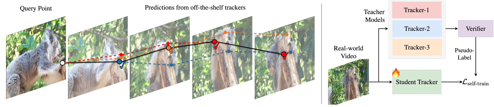
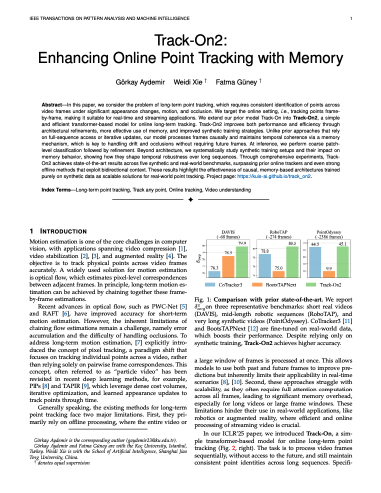
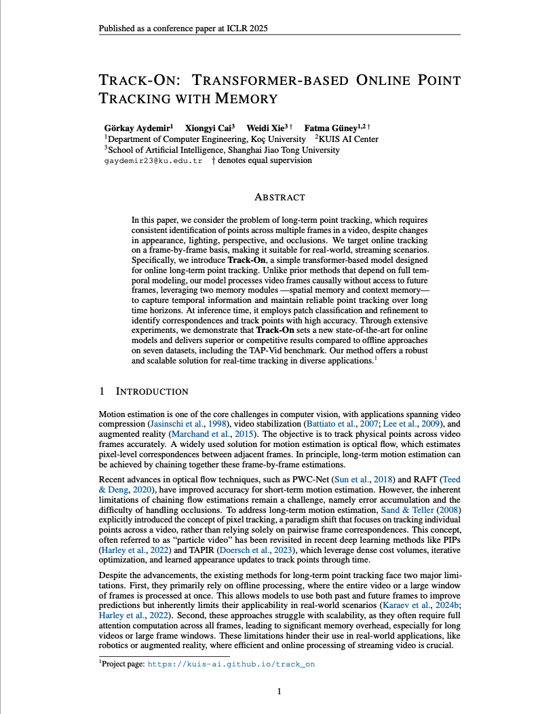

Verifier-Guided Pseudo-Labeling
Domain Gap in Point Tracking
Different trackers fail under different conditions and frames, highlighting the limitations of single-teacher pseudo-labeling.
Synthetic Training
Most point trackers are trained on synthetic videos with labels, which do not fully capture real-world appearance and motion complexity.
Single-Teacher Limitation
Pseudo-labeling with one teacher propagates its errors directly, making real-world adaptation brittle.
Verifier Motivation
Since different trackers succeed under different conditions, we learn a verifier to identify the most reliable prediction.
Verifier-Guided Real-World Adaptation

Left: Candidate trajectories produced by multiple off-the-shelf trackers. Right: A verifier selects the most reliable prediction to generate pseudo-labels for adapting a tracker to real-world videos.
- Candidate trajectories. Multiple off-the-shelf trackers produce alternative predictions for the same query point.
- Verifier scoring. A lightweight verifier evaluates the reliability of each candidate trajectory using local visual evidence and temporal consistency.
- Verifier-guided pseudo-labeling. The most reliable trajectory is selected and used as pseudo-labels for real-world adaptation.
- Track-On-R. Using these pseudo-labels, we fine-tune the base tracker on unlabeled real-world videos, resulting in Track-On-R, a model adapted to real-world motion and appearance variations.
Results
Benchmark Comparison
| Model | EgoPoints | RoboTAP | Kinetics | DAVIS | ||||
|---|---|---|---|---|---|---|---|---|
| δavg | OA | δavg | OA | δavg | OA | δavg | OA | |
| BootsTAPNext | 33.6 | 89.5 | 75.0 | 88.7 | 70.6 | 87.4 | 78.5 | 91.2 |
| CoTracker3 | 54.0 | 84.4 | 78.8 | 90.8 | 68.5 | 88.3 | 76.3 | 90.2 |
| AllTracker | 62.0 | 87.1 | 80.9 | 92.2 | 69.3 | 89.1 | 77.0 | 88.7 |
| Track-On-R (Ours) | 67.3 | 90.2 | 82.6 | 94.0 | 71.0 | 90.5 | 80.3 | 92.5 |
Qualitative Results
Credits / Acknowledgments
Datasets. Qualitative examples shown on this page are drawn from publicly available tracking datasets, including LaSOT and AnimalTrack. We thank the authors of these datasets for collecting and releasing them.
Compared Trackers. We also acknowledge the authors of the tracking methods used in our comparisons, including BootsTAPNext, AllTracker, and CoTracker3, for making their models publicly available.
Previous Work
This work builds on our previous research on online point tracking.

Görkay Aydemir, Weidi Xie, Fatma Güney
under submission, 2025
BibTeX | arXiv | Project Page
@article{aydemir2025trackon2,
title = {Track-On2: Enhancing Online Point Tracking with Memory},
author = {Aydemir, G\"orkay and Xie, Weidi and G\"uney, Fatma},
journal = {arXiv preprint arXiv:2509.19115},
year = {2025}}

Görkay Aydemir, Xiongyi Cai, Weidi Xie, Fatma Güney
ICLR, 2025
BibTeX | arXiv | Project Page
@inproceedings{aydemir2025trackon,
title = {Track-On: Transformer-based Online Point Tracking with Memory},
author = {Aydemir, G\"orkay and Cai, Xiongyi and Xie, Weidi and G\"uney, Fatma},
booktitle = {International Conference on Learning Representations (ICLR)},
year = {2025}
}
Project page for Real-World Point Tracking with Verifier-Guided Pseudo-Labeling